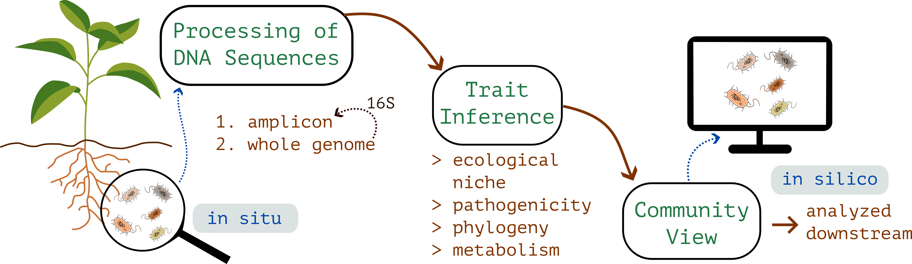

My work at Cybiome has two halves. First, the pipelines that take raw sequencing data
and turn it into a structured view of a microbial community. Second, the models
that run on that view and answer ecological questions about it. I join the two halves into
an integrated workflow (R, Python, containers), so that one piece flows into the next.
i
Pipelines
Two pipelines: one for amplicon sequencing, one for whole genome bacterial sequencing.
They produce structurally different data, broad and shallow on one side, deep and per
strain on the other, but they are linked. Amplicon ASVs can be matched back to genomes
from the genome pipeline, so an amplicon survey can pull down the genome derived traits
of the organisms it found.

fig. i — from soil to community view
Amplicon
marker gene · 16S & ITS
Marker gene reads from soil, root, gut and water samples. Bacterial 16S
and fungal ITS, with hash based deterministic ASV identifiers so the same
microbe carries the same ID across projects.
QualityDADA2 with automated denoising parameter selection
Taxonomycommunity structure, abundance, predicted function
PathogenicityMBPD reference flags for 16S
FungiFungalTraits and FUNGuild trait + guild assignment
InteropBIOM exchange with QIIME2 and mothur
Whole genome
per strain · bacterial
Bacterial genomes from raw reads, pre assembled contigs, or pre annotated genomes.
Each strain leaves the pipeline with a multi facet trait profile and a standalone
HTML report including a circular genome map. 16S extracted out, feeding the
amplicon pipeline back.
Sec. metabolitesantiSMASH biosynthetic gene clusters
BiosafetyStarAMR, VFDB, MBPD, k-mer ML
ii
Models on top
The questions sit downstream of the pipeline output. The application is agriculture and
microbiome biology: disease pressure on a crop, soil health under different management,
what assembles when, how strongly any of it predicts the outcome we care about. The
unifying frame is ecological. The methods range from statistical machine learning to
community level mechanistic modelling.
fig. placeholder — methods schema
Predictive
gradient boosting · ensembles
XGBoost, random forest, regularised regression, stacked ensembles. The
interesting feature engineering question is trait based versus OTU based:
collapse the community into functional, metabolic and ecological trait
profiles built from genome derived traits. Trait based generalises better
to the realistic case where the test set contains microbes the training
set has not seen. Interpretation through SHAP.
Mechanistic
GSMM · community FBA
Genome scale metabolic models for individual strains, reconstructed
from annotated genomes. Community level metabolic modelling
(SMETANA, MICOM) for how strains interact through their shared and
exchanged metabolites. Per organism flux similarity networks give
a graph view of metabolic relationships within a community.
Time series
EDM · Bayesian state-space
Empirical dynamic modelling for nonparametric forecasting and
attractor reconstruction. Bayesian state space models when we want
to put a generative story on top of a noisy series. The signature
from the PhD years, still in active use here.
outputs
Quarto reports. HTML and PDF, reproducible end to end.